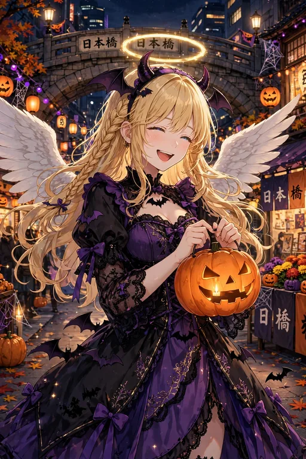

セラフィナ ハロウィン｜ハロウィン特集

2026年のハロウィンは終了しました。このページは、これまでのハロウィン場面の振り返りと、来季（2027年10月）に向けた特集の予告ページです。
これまでのハロウィン場面には、第3弾『日本の四季編』の「ハロウィンに天使コス（本物）で参加」、第5弾『すっかり日本の生活者編』の「ハロウィンの本気コスプレ」、そしてサービスシーン編の「ハロウィンの小悪魔コスプレ」があります。本物の天使が天使コスで参加するという、セラフィナらしい笑いの場面です。
来季のハロウィンでは、新しい場面の追加や公式SNSでの特集を予定しています。決まりましたら新着情報でお知らせします。
各場面は図鑑とガチャでも集められます。第3弾の図鑑では場面21、第5弾の図鑑では場面13、サービスシーン編の図鑑では場面4が、それぞれのハロウィン場面です。
第3弾『日本の四季編』は、BOOTH「angel222」で販売中です（30点・500円）。
第5弾『すっかり日本の生活者編』は、BOOTH「angel222」で販売中です（30点・500円）。